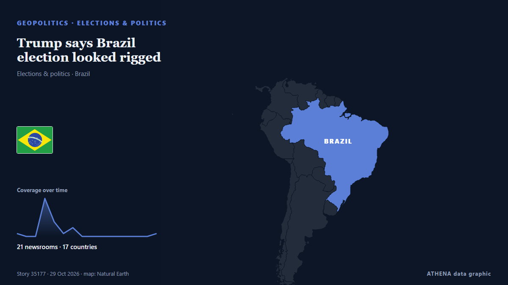

Trump says Brazil election looked rigged

US President Donald Trump said Monday that leftist incumbent Luiz Inacio Lula da Silva's surprise win in Brazil's presidential vote "looked like another rigged election," although the party of… من Korea Herald
نشرته بشكل مستقل 21 مصدرًا في 17 دولة منذ 26 أكتوبر، وأول من نشره Indian Express؛ والتغطية تتراجع. لا يجد ATHENA مؤشرات خطر في التغطية. الثقة 92٪ (مرتفعة)، وعدد المصادر المستقلة المؤكِّدة: 21، بمتوسط موثوقية للمصادر يبلغ 77٪. من نقل الخبر: 3 وسائل إعلام في الهند · India, 3 وسائل إعلام في الولايات المتحدة · United States, 2 وسائل إعلام في قطر · Qatar. امتدت التغطية من 26 أكتوبر إلى 29 أكتوبر، على مدى 90 ساعة.
لماذا يهم: قد تغيّر التطورات الأمنية والدبلوماسية التحالفات والتجارة والأسواق إلى ما هو أبعد بكثير من الدول المعنية مباشرة.
ما الذي تغيّر: تقرير جديد واحد خلال 24 ساعة حتى 29 أكتوبر.
تُعرض العناوين بالإنجليزية كما نُشرت.
نظرة سريعة
اختير وقُيِّم وكُتب وفق منهجية ATHENA المنشورة. لا يتدخل أي محرر في الأحداث بعينها. كيف يُنتَج ›
| 26 Oct 01:00 UTC | 1 |
|---|---|
| 26 Oct 07:00 UTC | 0 |
| 26 Oct 13:00 UTC | 0 |
| 26 Oct 19:00 UTC | 13 |
| 27 Oct 01:00 UTC | 5 |
| 27 Oct 07:00 UTC | 1 |
| 27 Oct 13:00 UTC | 3 |
| 27 Oct 19:00 UTC | 0 |
| 28 Oct 01:00 UTC | 0 |
| 28 Oct 07:00 UTC | 0 |
| 28 Oct 13:00 UTC | 0 |
| 28 Oct 19:00 UTC | 0 |
| 29 Oct 01:00 UTC | 0 |
| 29 Oct 07:00 UTC | 0 |
| 29 Oct 13:00 UTC | 0 |
| 29 Oct 19:00 UTC | 1 |
لماذا هذه الأرقام
الأهمية
الخطر
الثقة
التغطية — من نشر الخبر ومتى
العنوان كما نُشر · يفتح الأصل- Indian Express · الهند · India‘Vote chori’: Why BJP MP is citing Congress’s 1972 poll win in Bengal
- The Straits Times · سنغافورة · SingaporeTrump says Brazil election looked ‘rigged’, defeated Bolsonaro’s party recognises Lula win
- The Independent · المملكة المتحدة · United KingdomTrump calls Lula's election win in Brazil 'rigged' after his ally refused to concede
- Anadolu Agency (English) · تركيا · TurkeyTrump says Brazil’s presidential election looked ‘rigged’ and ‘corrupt’
- NDTV · الهند · IndiaTrump Slams Brazil Election As "Rigged" And "Corrupt" After Lula Wins
- Buenos Aires Times · الأرجنتين · ArgentinaTrump slams 'rigged' Brazil election after ally Flávio Bolsonaro loses
- FBC News · فيجي · FijiTrump says Brazil election looked ‘rigged’ as Bolsonaro refuses to recognize Lula win
- Times of India · الهند · India'Looked so corrupt’: Trump questions Brazil election after Lula defeats his ally
- The Hill · الولايات المتحدة · United StatesTrump says Brazil's election results 'looked rigged'
- Euronews English · فرنسا · FranceTrump says Brazil election looked 'rigged' without giving evidence
- Free Malaysia Today · ماليزيا · MalaysiaTrump slams ‘rigged’ Brazil election after ally loses to leftist Lula
- Arab News · المملكة العربية السعودية · Saudi ArabiaTrump slams ‘rigged’ Brazil election after ally loses to leftist Lula
- PBS NewsHour · الولايات المتحدة · United StatesLula prevails in Brazil but Flávio Bolsonaro refuses to concede
- Al Jazeera English · قطر · QatarBolsonaro’s party accepts Brazil election after Trump calls vote ‘rigged’
- The Jerusalem Post · إسرائيل · IsraelTrump says Brazil election looked 'rigged', defeated Bolsonaro's party recognizes Lula win
- Korea Herald · كوريا الجنوبية · South KoreaTrump says Brazil election looked rigged
- Club of Mozambique · موزمبيق · MozambiqueTrump says Brazil election looked ‘rigged,’ defeated Bolsonaro’s party recognizes Lula win
- The Rio Times · البرازيل · BrazilThe Big Read: Brazil, Tuesday 27 October
- The Rio Times · البرازيل · BrazilTrump Calls Brazil’s Election Rigged
- NPR World · الولايات المتحدة · United StatesBolsonaro's party accepts Brazil election defeat, but he refuses to concede
- AzerNews · أذربيجان · AzerbaijanTrump calls Brazil election results “rigged” after Lula da Silva’s victory
- Breaking Belize News · بليز · BelizeInternational News: Trump questions Brazil election results as Bolsonaro’s party recognizes Lula’s victory
- Al Jazeera English · قطر · QatarTrump says won’t ‘take sides’ in Brazil election, but calls it a ‘disgrace’